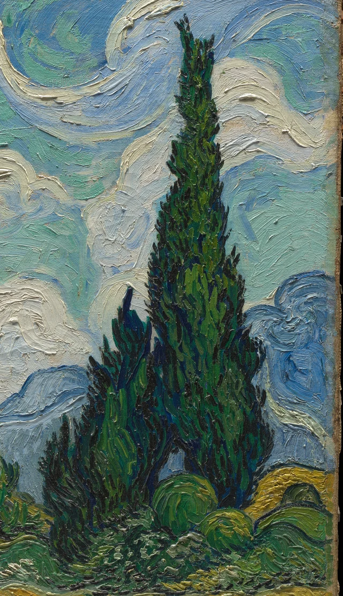
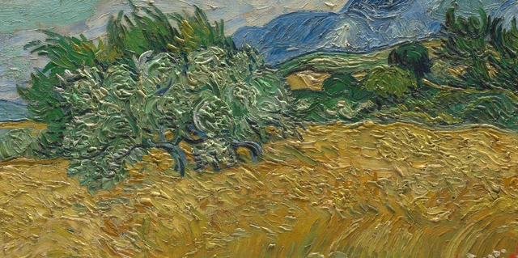

Sehen wir zuerst die weißen Wolken über dem blauen Höhenzug an. Sie gehören zum fernen Himmel, doch die weiße Farbe besitzt deutliche Rinnen und Grate und scheint dem Auge näher als die Berge. Senken wir den Blick wieder: Goldgelbes Weizenfeld, silbrig grüner Olivenbaum und dunkle Zypressen ordnen die Landschaft weiterhin in Vorder- und Hintergrund. Einer ihrer fernsten Bereiche gehört zugleich zu den auffälligsten Stellen der gemalten Oberfläche.

Diese Betrachtung folgt zwei Arten von Nähe und Ferne, die sich nicht ganz decken. Die Landschaft führt den Blick über Feld und Gebüsch zu Bergen und Himmel; die aufgeworfene Farbe holt ihn immer wieder an die Bildoberfläche zurück. Die Stärke dieses Gemäldes liegt darin, dass beide Wege offenbleiben. Dick aufgetragene Farbe versetzt die Wolken nicht vor das Weizenfeld, und die Weite des Himmels lässt die kräftige weiße Farbschicht nicht aus unserem Blick verschwinden.
Van Gogh malte das Bild 1889 in Saint-Rémy in Südfrankreich. Die Fassung im Metropolitan Museum ist die erste, unmittelbar vor dem Motiv entstandene Ölstudie. Im September desselben Jahres schuf er im Atelier zwei weitere Ölgemälde nach dieser Komposition; eines befindet sich heute in der Londoner National Gallery. Hier geht es durchgehend um das New Yorker Bild mit der Werkverzeichnisnummer F717. Die technische Untersuchung stellt einen Zusammenhang mit einer Rohrfederzeichnung her, die Van Gogh am 2. Juli an Theo schickte. Das Gemälde war demnach bereits vor diesem Datum fertig. Diese Entstehungsgeschichte hilft vor allem, den Gegenstand unserer Betrachtung genau zu bestimmen: Bei ähnlicher Komposition kann eine andere Behandlung der Farbe zu einem anderen Seherlebnis führen. Charlotte Hale, technische Erläuterungen, 2016
1 Der Himmel ist fern und das Weiß ganz nah
Das Weiß im Himmel hält den Blick besonders lange fest. Manche Wolken bestehen aus kurzen, dicht gedrängten Erhebungen, andere ziehen sich zu langen, breiten Bögen auseinander. Hier wird kein einzelnes Wolkenmuster gleichmäßig wiederholt. Die dichteren weißen Partien links lockern sich zur Mitte hin; die große Biegung rechts oben umschließt auffällige blaugrüne Zwischenräume. Einer weißen Kante können wir eine Weile folgen, doch Wendungen und Tempo verändern sich immer wieder.
An diesen Formen ist das Blau aktiv beteiligt. Es dient nicht bloß als Hintergrund hinter den Wolken. An manchen Stellen biegt es mit dem Weiß ab; andernorts schiebt sich ein türkisgrüner Zug zwischen zwei Wolkengruppen. Was wir als Bewegung des Himmels wahrnehmen, entsteht deshalb auch innerhalb der Farbbänder. Blau, Grün und Weiß liegen nebeneinander und wirken durch ihre wechselnde Breite und Richtung zusammen.

Diese Farbbänder stellen Wolken dar und zeigen zugleich die Gestalt der Farbe selbst. In der Landschaft liegen die Wolken weit hinter den Bergen; als Farbmaterie wirken die dicken weißen Grate ungewöhnlich nah. Sie besitzen Rinnen, Erhebungen und Ränder und scheinen sogar greifbarer als die blauen Berge. Wir können dem Weiß in die vorgestellte Himmelsweite folgen oder an einem Grat innehalten und betrachten, wie die Farbe aufragt.
Die technische Untersuchung des Metropolitan Museum zählt die weißen Wolken zu den am stärksten pastos gemalten Stellen und beschreibt die breiten, geschwungenen Pinselzüge des Himmels. Diese Befunde stützen den Blick auf das Relief der Farbe. Eine digitale Fotografie ersetzt jedoch nicht die Bewegung vor dem Original und erlaubt kein sicheres Urteil über dessen tatsächlichen Oberflächenglanz.
Diese Nähe der Oberfläche erklärt noch nicht die Entfernung im Bild. Rechts stehen dunkle Zypressen vor den Wolken; unten rückt das schmale blaue Bergband den Himmel weiter zurück. Obwohl das Weiß heller und auffälliger ist, bleiben die Wolken hinten. Im Höhenzug und im Olivenbaum finden wir weitere Hinweise darauf, wodurch diese Entfernung bestehen bleibt.
2 Wie der Höhenzug hinter dem Baum bleibt
Am silbrig grünen Olivenbaum links können wir verfolgen, wie Vorder- und Hintergrund ineinandergreifen. Seine Krone breitet sich seitlich aus; helle, gewundene kleine Pinselzüge sammeln sich im Laub. Vom dunklen Stamm sind nur einzelne Abschnitte sichtbar, die in das gelbe Feld hinabreichen. Gegenüber den schmalen Zypressen wirkt er niedrig und breit, sein Rand ist stärker aufgelöst. Über der Krone und an ihren Seiten lässt sich weiterhin der blaue Höhenzug verfolgen, der hinter ihr verläuft.

Das Olivenlaub ist dicht, doch viel helle Farbe und kleine Zwischenräume verteilen die dunklen Stellen. Ihm fehlt das geballte Gewicht der Zypressen. Wo Baum und Feld zusammentreffen, ragen einzelne Zweige und Blattränder hinaus; dazwischen erscheint Gelb. Diese unregelmäßige Grenze hebt die räumliche Staffelung nicht auf: Laub liegt vor dem Gelb, dessen sichtbare Lücken wiederum das Feld hinter dem Baum weiterdenken lassen.
Hinter dem Baum zieht der blaue Höhenzug in wechselnder Höhe durch die Landschaft. Seine lange Kammlinie antwortet auf die Kurven am Himmel; seine schmale, gestreckte Gestalt führt den Blick zugleich wieder seitwärts. Er bietet eine erkennbare Ferne: Über den Olivenbaum, die Sträucher und das Feld hinweg gelangt das Auge zum kühleren Blau und von dort hinauf in den offeneren Himmel. Die kräftigen Pinselspuren auf der gesamten Oberfläche verhindern nicht, dass sich ein Vorne und Hinten herausbildet.
Die Bildtiefe beruht daher nicht allein darauf, Entferntes glatt oder undeutlich zu malen. Auch der Höhenzug trägt klare Pinselspuren; hinter diesem schmaleren, kühleren Blau sind die Wolken sogar noch dicker gemalt. Überschneidungen, Lage, Farbbeziehungen und Formgrößen halten die räumliche Staffelung gemeinsam aufrecht. Die Farbe muss nicht als Mittel unsichtbar werden, damit ein Ort hinter einem anderen liegen kann.
3 Das Weizenfeld holt den Blick in die Nähe zurück
Unterhalb des Olivenbaums gelangen wir in die breite goldgelbe Zone des unteren Bildteils. Aus der Ferne wirkt das Feld wie eine einzige Welle, die sich nach rechts hebt. Beim näheren Hinsehen zerfällt diese scheinbar gleichmäßige Woge in viele kleinere Abschnitte. Nahe dem unteren Rand ziehen lange, schräge Halme in Gruppen nebeneinander durch ruhigere Ockertöne. Am oberen Feldrand verdichten sich die Spuren dagegen zu kurzen Haken, Knicken und kleinen Knoten. Darin erkennen wir Halme und Ähren und spüren zugleich ihr verschiedenes Gewicht: Die Stängel strecken sich, die Ähren drängen sich zusammen.
Das Feld folgt keinem einheitlichen Richtungspfeil. Links unten biegen sich die Linien zur einen Seite, in der Mitte treten Bündel anderer Schrägen hinzu, weiter rechts wird die Neigung deutlicher. Erst das Nebeneinander dieser Richtungen lässt das quer durch das Bild verlaufende Gelb auf und ab schwingen. Dabei an Wind im Weizen zu denken, liegt nahe. Jeden Pinselzug als genaue Aufzeichnung desselben Windstoßes zu lesen, ginge jedoch über das hinaus, was sich am Bild belegen lässt.
Zwischen dem Gelb erscheinen Grün und Graublau. Manchmal bildet eine kühle Farbe nur einen schmalen Spalt, manchmal tritt ein grünlicher Strich deutlicher hervor. Diese Einsprengsel lassen im Feld dichtere und offenere Stellen entstehen und verhindern, dass die helle Fläche geschlossen und undurchlässig wirkt. Das „Goldgelb“ bezeichnet hier keine einheitliche Farbe aus der Tube. Es ist ein Gesamteindruck, der aus der Nachbarschaft vieler warmer und einiger weniger kühler Töne entsteht.
Weiter unten stößt das Weizenfeld an die Gräser im Vordergrund. Rechts unten legen sich grüne Pinselzüge in Schleifen und kehren wieder um. Sie sind breiter und runder als die Halme. Wenige rote Blüten setzen kleine Akzente an der Grenze zwischen Gras und Weizen. Sie beanspruchen kaum Fläche und holen den Blick doch wieder nach vorn. Gerade noch sind wir mit dem Gelb in die Ferne gewandert; nun zeigen die einzeln unterscheidbaren roten Punkte einen anderen Maßstab am untersten Bildrand.
Auch hier stößt die Vorstellung, Näheres müsse dicker gemalt sein, auf Widerstand. Einige Halmbündel am unteren Rand ziehen durch vergleichsweise ruhige Ockerflächen, während sich am ferneren oberen Feldrand dichte Erhebungen sammeln. Trotzdem erkennen wir ein Feld, das sich nach hinten erstreckt: Vordergrundgräser liegen davor, der Olivenbaum greift in seine obere Grenze ein, lange Halme und gedrängte Ähren bieten unterschiedliche Maßstäbe. Auch im Weizenfeld folgen räumliche Entfernung und Farbdicke keiner gemeinsamen Reihenfolge.
4 Die Zypressen verbinden zwei Arten von Nähe und Ferne
Die Zypressen rechts ändern die Blickrichtung mit einem Mal. Feld und blauer Höhenzug verlaufen überwiegend waagerecht; die Bäume steigen aus dichtem Gebüsch auf und tragen das untere Dunkelgrün in den Himmel. Da sie rechts von der Mitte stehen, teilen sie das Bild nicht in zwei symmetrische Hälften. Der Blick steigt an ihnen vom Boden bis zur Höhe der Wolken. Die Bäume bleiben dabei vor den Wolken, während ihre unteren Partien weiterhin im niedrigen Gebüsch stehen.
Das Dunkel der Zypressen ist keineswegs gleichmäßig. Helleres Grün sitzt zwischen tiefem Blau und fast schwarzen Tönen. Schmale, kurze Striche weisen bald aufwärts, bald schießen sie seitlich heraus. Die Krone verjüngt sich insgesamt nach oben und enthält doch viele kleine Richtungswechsel. Dadurch wirkt der Baum fest und lebendig zugleich: Wir sehen ein Volumen aus dichtem Blattwerk, keine schwarz ausgefüllte Silhouette.
Besonders aufschlussreich ist die Grenze zwischen Baum und Wolken. Im Baum wechselt das Grün auf sehr kurzen Strecken seine Richtung; außerhalb kann helle Farbe einen langen Bogen ziehen. Beides ist gebogen, doch das eine gedrängt, das andere weit geöffnet. Hier sammeln sich viele kleine Hell-Dunkel-Wechsel, dort entfalten sich breite Farbbänder. Der Baumumriss verdeckt die Wolkenfarbe dahinter und erzeugt räumliche Staffelung. Die weiße Erhebung daneben lenkt die Aufmerksamkeit wieder auf die Farbe. An derselben Grenze treten Landschaftstiefe und Bildoberfläche abwechselnd hervor.
Der Vergleich mit einer Flamme stellt sich rasch ein. Er trifft die nach oben zulaufende Form, lässt aber leicht vergessen, wie breit und schwer ihr unterer Teil ist. Am Fuß verbindet sich der Baum mit benachbarten Sträuchern zu einer niedrigen dunklen Zone, die ihn in der Waagerechten wieder an den Boden anschließt. Wer nur auf die Spitze schaut, könnte meinen, die Zypresse wolle aus dem Bild aufsteigen. Erst die ganze Form zeigt, wie fest diese Aufwärtskraft unten verankert ist.
Die technischen Erläuterungen des Museums verzeichnen Schäden an beiden Seiten der höheren Zypressenspitze. Der Umriss wurde retuschiert und kann vom ursprünglichen Zustand abweichen. Lage, dunkles Volumen und Verhältnis der Baumgruppe zu den Wolken lassen sich weiterhin besprechen; die retuschierte Spitze darf jedoch nicht Strich für Strich Van Goghs ursprünglicher Malerei zugeschrieben werden. Hale zum Erhaltungszustand
5 In die Landschaft hinein und an die Oberfläche zurück
Im Gesamtbild eröffnen sich nun zwei Wege. Über Gras, Weizen, Olivenbaum und blaue Berge hinweg entfaltet sich die Landschaft in gestaffelten Entfernungen. Folgen wir dagegen den weißen Farbgraten, den kleinen Knoten im Laub und den langen Halmspuren, bewegt sich der Blick über die Oberfläche einer einzigen Leinwand. Auf diesen beiden Wegen erscheint nicht immer dieselbe Stelle als die uns nächste.
Die technischen Erläuterungen unterscheiden die Behandlung von Wolken, Zypressen, Olivenbaum, Weizen und Vordergrundgras; große Teile des Bildes wurden nass in nass gemalt. Das hilft zu verstehen, warum Farben an ihren Berührungsstellen ineinandergehen. Die Reihenfolge jedes einzelnen Strichs lässt sich aus einem Foto dennoch nicht rekonstruieren. Das Original ist etwa dreiundneunzig Zentimeter breit: Die Weite der Landschaft entsteht innerhalb eines Gegenstands mit bestimmten Maßen und einer reliefartigen Oberfläche. Hale zur Maltechnik
Besonders schätze ich, dass das Bild uns nicht auf einen dieser Wege festlegt. Die weißen Wolken bleiben fern, die weiße Farbe bleibt nah. Die Zypressen stehen vor den Wolken, ohne dass sie die stoffliche Präsenz des Weiß deshalb zwangsläufig übertreffen. Das Feld erstreckt sich nach hinten, ohne dass dort alles geglättet werden müsste. Immer wieder gelangen wir in die Landschaft und werden von einer Erhebung zurückgeholt. Dieses Hin und Her gibt der Weite eine aus der Nähe betrachtbare Beschaffenheit.
„Alles bewegt sich“ kann die Erregung des ersten Blicks ausdrücken, erschöpft diese Betrachtung aber nicht. Auch die unmittelbare Deutung der Pinselspuren als Ausdruck psychischer Krankheit überspringt ihre konkrete Arbeit: Entfernung herzustellen und Farbe sichtbar werden zu lassen. Kehren wir zur ersten weißen Wolke zurück. Der Blick hat die Berge schon überschritten, hält jedoch an einem nahen weißen Grat auf der Bildoberfläche an. Ferne Landschaft und materielle Oberfläche bestehen hier zugleich; keine ersetzt die andere.
Optionale Lektüre Wenn sichtbare Pinselspuren die Entfernung verändern
Han Qins SAE-Ästhetik, Self-as-an-End, unterscheidet die Frage, wie etwas erscheint, von der Frage, ob es uns gefällt. Mit diesem Ansatz aus The Beauty of Perception können wir zwei Arten des Sehens vergleichen: Farbe als Landschaft und Farbe als Oberfläche. Die Übung betrifft unser Betrachten und dient nicht dazu, Van Goghs Absichten zu erschließen. The Beauty of Perception, Abschnitte 2–3
Lassen wir zuerst das vollständige Bild auf dem Bildschirm erscheinen und verfolgen die räumlichen Beziehungen von Feld, Gebüsch und Höhenzug. Vergrößern wir dann innerhalb der Originalaufnahme eine weiße Wolkenpartie über dem Bergkamm und achten auf ihre Grate und Rinnen. Wird die Farbschicht vor uns dadurch stärker bewusst? Kehren wir zum Gesamtbild zurück und prüfen, ob die gerade erkannten Spuren die empfundene Entfernung des Himmels verändern.
Es muss kein einheitliches Ergebnis geben. Das dicke Weiß kann den Himmel näher wirken lassen, ohne ihn aus seiner fernen Lage zu lösen. Vielleicht erscheint der Raum beim Beachten der Pinselspuren vorübergehend flacher und gewinnt erst dort wieder Tiefe, wo Bäume den Höhenzug verdecken. Die Stelle einer solchen Veränderung zu benennen, ist hilfreicher, als sich vorher vorzunehmen, „beides zugleich zu sehen“. Falls Vergrößern und Verkleinern das Entfernungsempfinden nicht verändern, sollte auch dieses Ergebnis festgehalten werden.
Trennen wir nun zwei Urteile: „Ich mag Landschaften ohne sichtbare Pinselspuren lieber“ und „Sichtbare Pinselspuren zerstören zwangsläufig die Tiefe“. Das erste ist eine persönliche Vorliebe. Das zweite muss sich einer Frage dieses Bildes stellen: Welche Überschneidungen und Farbbeziehungen halten die Berge weiterhin hinter den Bäumen und die Wolken hinter den Bergen? Die Unterscheidung zwischen persönlicher Ästhetik und Urteilsgrund im SAE-Grundlagentext erlaubt uns, die Vorliebe zu behalten und dennoch das „zwangsläufig“ zu überprüfen. SAE Judgment and Aesthetics
Hinweise zu Bildern und Quellen
Die Betrachtung beruht auf der offiziellen Aufnahme des Metropolitan Museum mit 4000 × 3184 Pixeln. Die Gesamtansicht entspricht der heruntergeladenen Datei einschließlich der Leinwandkanten und des schmalen schwarzen Außenrands. Die beiden Detailbilder wurden lediglich zugeschnitten; Originalpixel und ICC-Farbprofil blieben erhalten. Es wurden weder Farben verändert noch Schärfung, Retuschen oder generierte Inhalte hinzugefügt. Bildschirmdarstellung, Beleuchtung bei der Aufnahme und Vergrößerung beeinflussen das Sehen.
Die Aufnahme wird gemäß der Open-Access-Regelung des Museums unter CC0 verwendet. Daraus folgt nicht, dass auch seine wissenschaftlichen Texte unter denselben Bedingungen beliebig übernommen werden dürfen. Die visuellen Urteile dieses Beitrags beruhen auf einer eigenständigen Betrachtung; historische und materialtechnische Angaben stützen sich auf die verlinkten Quellen. Die philosophische Übung gibt keine Deutung des Museums wieder. Die vollständigen Nachweise stehen im Quellenverzeichnis und im Bildnachweis.